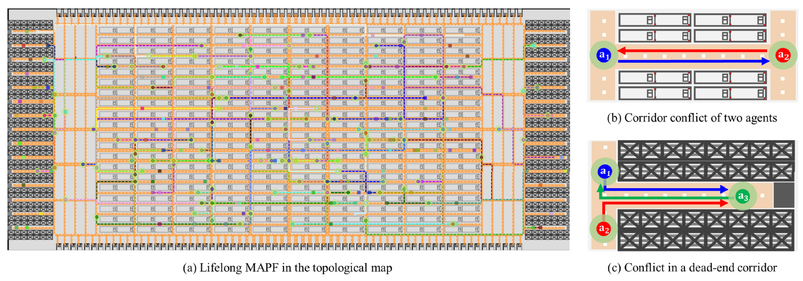
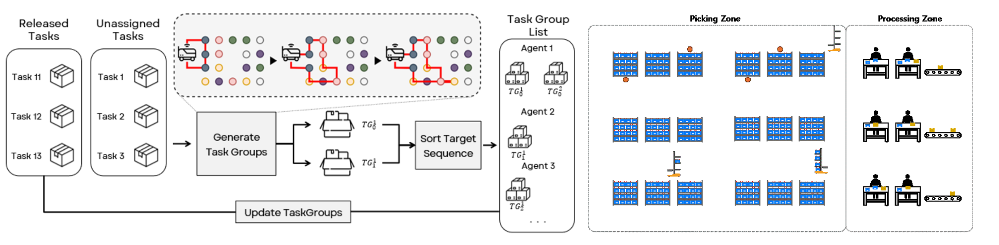

We study how multiple robots share space, divide work, and adapt their plans as new tasks and execution failures arise. Our research connects fleet coordination, multi-agent pathfinding, online task allocation, and language-guided planning for collaborative robot systems.
Published research and system development
Logistics fleets must repeatedly plan routes as robots receive new destinations. Narrow aisles make this difficult: robots cannot easily pass one another, and short planning horizons can overlook conflicts farther along a corridor.
The 2023 study evaluates lifelong pathfinding in warehouse and railway scenarios, reporting throughput and planning success under the tested conditions. Current system work develops fleet-management interfaces and distributed coordination for logistics applications.

Ongoing research
A robot acting only on nearby observations may avoid immediate conflicts while moving into congestion elsewhere in the fleet. We investigate how lightweight shared information can improve local decisions without requiring a centralized planner to choose every action.
This direction explores the balance between local autonomy and fleet-wide coordination. Its objective is to reduce the information and computation needed for effective multi-robot navigation; comparative performance remains an evaluation target.
Published research
In order-picking scenarios, a robot may collect items for several orders before returning to a delivery location. Efficient allocation must account for payload limits and the complete sequence of pickup locations, rather than assigning each order independently.
The 2025 study evaluates service time, makespan, and computation cost in Kiva-style warehouse and sorting-center simulations. Its efficient variant limits candidate insertion calculations to newly added targets, reducing repeated route computation.

Accepted to Findings of EMNLP 2026
Long-horizon instructions can require many robots and interdependent actions. As plans grow, a single planner must track increasing amounts of state, and one failed action may interrupt work that does not depend on it.
HiP-LR organizes planning into a hierarchy with a central large language model (LLM) agent and local agents assigned to dependency-isolated groups.
This work studies recovery during simulated multi-robot tasks, including failures caused by unavailable manipulation actions and changed scene conditions.